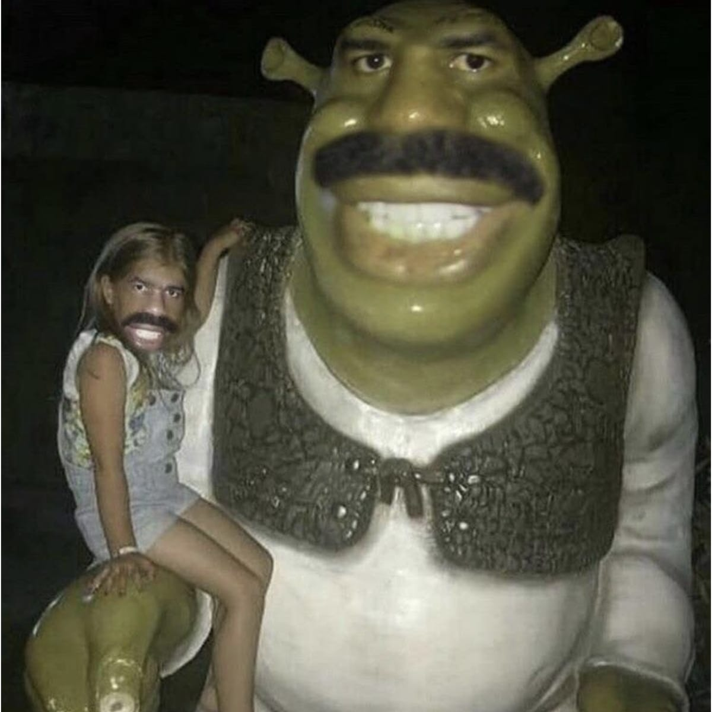
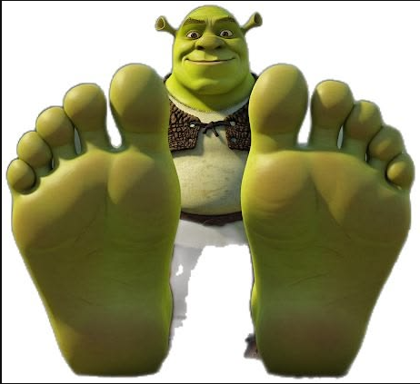
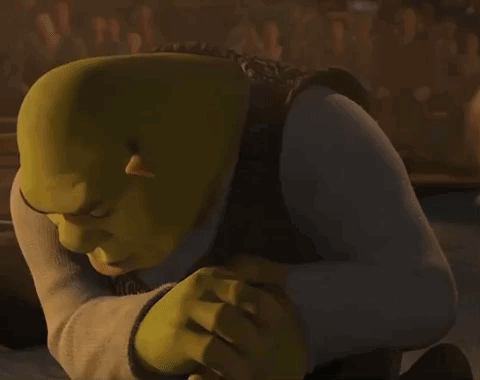
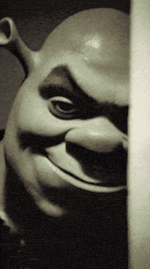

Shrek

Biographie
Shrek tient son nom de la couleur verte traduite en ancienne langue germanique par sheurk. Shrek est un grand ogre à la peau verte, intimidant physiquement, et parlant avec un accent écossais. Même si son passé est un mystère, selon Shrek the Musical, il est révélé que, le jour de son 7e anniversaire, Shrek a été expulsé de son foyer par ses parents comme le voulait la tradition ogre. On le voit par la suite voyager seul, et être harcelé ou réprimandé par les passants. Le seul accueil chaleureux qu’il reçoit est un signe de la main amical de la part de la jeune Fiona, que ses parents emmènent alors rapidement. Dans le livre écrit par William Steig, Shrek !, ses parents le jettent dans un trou noir qui mène au monde réel. Shrek est également un joueur compétent de saxophone, connu pour cette célèbre performance.

Synopsis des films
Shrek
Il est, depuis le premier film, accompagné d'un ami nommé L'Âne, de la princesse Fiona, (qu'il épousera par la suite) qu'il sauvera d'une tour protégée par une dragonne et du Chat potté, depuis le deuxième volet. Il n'est pas vraiment un ogre car même s'il en a l'apparence, il n'en a ni les habitudes ni les mœurs : il vit seul, isolé, dans une cabane au fond des bois, et ne mange pas les enfants. Les gens ont tout de même peur de lui, uniquement en raison des apparences : il ressemble à un ogre, donc il doit forcément en être un, avec tout ce que cela entraîne. La portée du conte de Shrek tient en ce qu'il ne faut pas se fier aux apparences. Le message a toute sa valeur dans notre société moderne de l'image : l'ogre a ainsi en réalité bon cœur et souffre de son isolement. Dans cet opus, Shrek effectue une quête pour le seigneur Lord Farquaad après que ce dernier ait envoyé des créatures fantastiques dans son marais. Shrek part délivrer (avec son ami L'Âne) la princesse Fiona, prisonnière d'un dragon en échange de la libération de son marais. Une fois la princesse libérée et sur le chemin du château de Farquaad, Shrek et la princesse commencent à se rapprocher. Mais n'ayant pas le courage de dévoiler ses sentiments à Fiona et après un malentendu, celle-ci part avec Farquaad. C'est alors que l'Âne rejoint Shrek (de nouveau dans son marais) pour lui annoncer que la Princesse a développé un attachement pour lui. Tous deux se précipitent alors vers le château de Farquaad et Shrek interrompt le mariage. Juste après, Fiona (atteinte par un sort quand elle était petite) se transforme en ogresse (tous les soirs au coucher du soleil). Un Farquaad écœuré qui ordonne à ses gardes d'amener Shrek et Fiona, quant à lui, il se déclare Roi avant que la Dragonne (avec l'Âne) ne débarque et le dévore. Après ça, Shrek avoue ses sentiments à Fiona et les deux se marient.
Le film entier pour ceux qui ne l'ont pas vu :

Shrek 5
Il n'est encore sorti.

Distinctions
Shrek apparaît dans la version musicale du film de 2001, qui a débuté en 2008. Le rôle a été créé par l'acteur de Broadway, Brian d'Arcy James, qui a obtenu une nomination à Tony pour ce film. Le personnage est resté pratiquement inchangé dans la comédie musicale, tout comme l'intrigue. Cependant, divers détails mineurs diffèrent entre la comédie musicale et le film. Ben Crawford (Broadway), Eric Petersen (tournée nationale), Jacob Ming-Trent (doublure de Broadway), Brian Gonzales (doublure de Broadway / National Tour), David Foley, Jr. (doublure de la tournée nationale), et à partir de 2011 - Nigel Lindsay (West End).
« Shrek is love, Shrek is life. »
Le 21 mai 2010, Shrek a reçu une étoile sur le Hollywood Walk of Fame à Los Angeles. Dans les jeux vidéo, Shrek apparaît en tant que joueur à débloquer dans Underground 2 de Tony Hawk et en tant que personnage jouable dans Madagascar Kartz et DreamWorks Super Star Kartz. Sur les sites de médias sociaux, Shrek a été décrit dans une variété de macros d’image.
